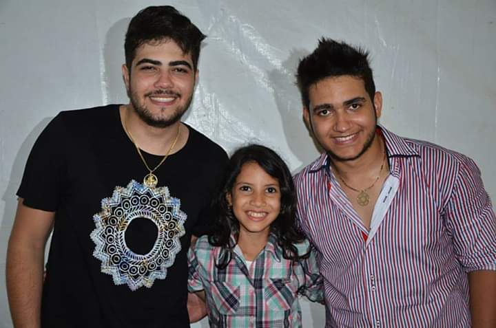
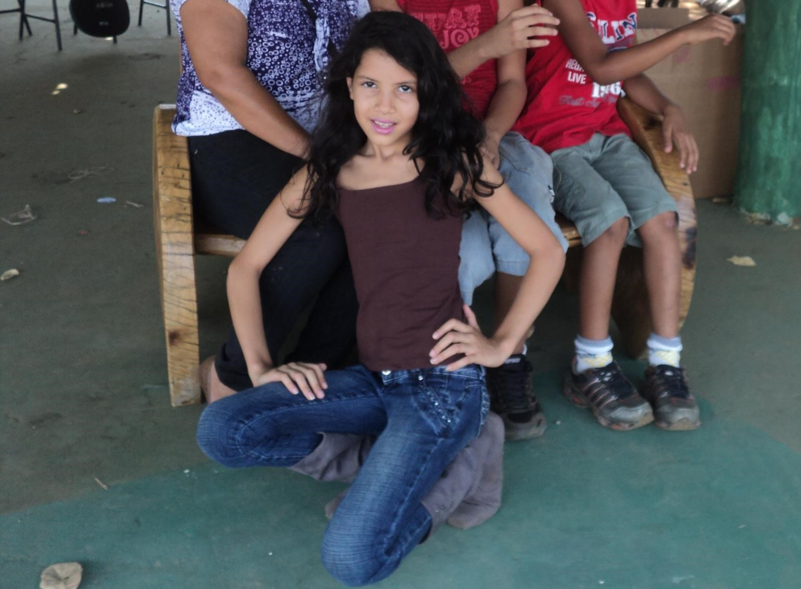

Aqui logo no começo da minha carreira, eu já atendia meus fãs no camarim. E como esse mundo é pequeno! Pouco tempo depois, essas duas figuras viraram uma das duplas sertanejas mais escutadas do Brasil. A quem diga que eu ajudei no engajamento quando tirei essa foto, mas o mérito é todo deles, baita dupla!
Por: Maria Regina
Ler mais

Bom, como todos sabem, sou conhecida mundialmente por meu trabalho como modelo, e esse sonho surgiu muito cedo. Desde pequena eu já demonstrava talento nessa área, e minha família não perdeu tempo e não mediu esforços para me ajudar nessa caminhada. Devo tudo a eles, minha base.
Por: Maria Regina
Ler mais
Como toda carreira tem um fim, eu sempre soube que um dia poderia sair das passarelas e sempre trabalhei muito para ter uma vida estável financeiramente. Uma parte dos investimentos separei para comprar uma praia, e batizei com o nome do que eu mais gosto, rs. Essa é uma das minhas fontes de renda hoje, aposentada, porém parada nunca rs.
Por: Maria Regina
Ler mais